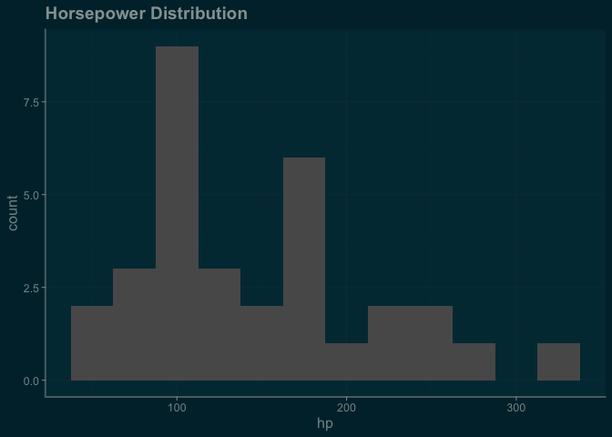

The goal of ggthemeAI is to make it quicker to prototype highly-custom ‘ggplot2’ themes. It uses LLMs to rapidly generate theme functions according to the visual characteristics you describe.
Imagine some theme_x() function that might look cool. Now, if you can describe it in natural language, you can try a version of it instantly!
It uses ellmer as a chat interface to various LLM providers.
Note the package is still in development, so the API may change prior to a CRAN release.
Features
-
make_ai_theme(): Create a ggplot2 theme function from a description of the desired theme - Choose your level of safety: Get a theme function directly, or get an expression that you can inspect before evaluating
- function blacklisting:
make_ai_theme()will check the generated theme for dangerous function calls (likeunlink()) and warn you if it finds any (to be combined with other safety layers/practices) - Image input: optionally use ellmer image content functions to add images to the chat
- ggplot2-focused system prompts for ellmer chats
Installation
You can install the development version of ggthemeAI like so:
pak::pak('arkraieski/ggthemeAI')Example and basic usage
This example shows you how to get started creating themes with ggthemeAI. The make_ai_theme() function takes a chat object and a description of the theme you want, and returns code for a ggplot2 theme function.
library(ggplot2)
library(ellmer)
library(ggthemeAI)
chat <- chat_openai() # can customize system prompt here if desired
#> Using model = "gpt-4.1".
theme_expression <- make_ai_theme(chat,
'solarized dark take on the default ggplot2 theme',
return_type = "expression")
#> function(base_size = 11, base_family = "") {
#> # Solarized Dark palette
#> bg <- "#002b36"
#> fg <- "#839496"
#> grid <- "#073642"
#> accent <- "#586e75"
#> white <- "#fdf6e3"
#> orange <- "#cb4b16"
#> blue <- "#268bd2"
#> green <- "#859900"
#>
#> theme_grey(base_size = base_size, base_family = base_family) %+replace%
#> theme(
#> line = element_line(colour = fg),
#> rect = element_rect(fill = bg, colour = NA),
#> text = element_text(colour = fg, family = base_family, size = base_size),
#> axis.text = element_text(colour = white),
#> axis.title = element_text(colour = blue, face = "bold"),
#> axis.ticks = element_line(colour = accent),
#> axis.line = element_line(colour = accent),
#> panel.background = element_rect(fill = bg, colour = NA),
#> panel.border = element_rect(colour = accent, fill = NA),
#> panel.grid.major = element_line(colour = grid, size = 0.5),
#> panel.grid.minor = element_line(colour = grid, size = 0.25),
#> plot.background = element_rect(fill = bg, colour = NA),
#> plot.title = element_text(face = "bold", hjust = 0, size = base_size *
#> 1.4, colour = orange),
#> plot.subtitle = element_text(hjust = 0, size = base_size * 1.1, colour =
#> blue),
#> plot.caption = element_text(hjust = 1, size = base_size * 0.8, colour =
#> fg),
#> legend.background = element_rect(fill = bg, colour = NA),
#> legend.key = element_rect(fill = bg, colour = NA),
#> legend.text = element_text(colour = white),
#> legend.title = element_text(colour = orange, face = "bold"),
#> strip.background = element_rect(fill = accent, colour = NA),
#> strip.text = element_text(colour = white, face = "bold"),
#> complete = TRUE
#> )
#> }
# in an interactive session, you can/should now inspect the content of theme code
# before proceeding
# theme_expression
# eval to create the final theme function
theme_solarized <- eval(theme_expression)
ggplot(mtcars, aes(x = hp)) +
geom_histogram(binwidth = 25) +
labs(title = "Horsepower Distribution") +
theme_solarized() # LLM wrote the code for this function
#> Warning: The `size` argument of `element_line()` is deprecated as of ggplot2 3.4.0.
#> ℹ Please use the `linewidth` argument instead.
#> This warning is displayed once every 8 hours.
#> Call `lifecycle::last_lifecycle_warnings()` to see where this warning was
#> generated.
If you want to skip the step of evaluating the expression, you can use return_type = "function" (or just omit that argument) to get a function directly. However, this is fundamentally kind of dangerous because you are executing LLM-generated code. However, in a low-risk environment (ideally disposable/isolated like Docker) where all input is trusted, you might be OK with that. (make_ai_theme() does call find_dangerous_calls() but there are ways function calls can be constructed/obfuscated to get around that)
It should be noted that make_ai_theme() is not a pure function. This is by design. In addition to return the new theme, the state of the R6 Chat is updated. You can then chat with the LLM to have it explain the theme or iterate on it.
There’s also a check_theme() function that checks if a function is actually a ggplot2 theme. However, this function only works by actually executing the theme, so it shouldn’t be used as a security measure. I intend to add some contrast checking to that function if it remains in the package.
Use cases
- Rapid design and prototyping of highly custom themes for stylized infographics
- Trying out a bunch of drastically different looks quickly
- Starting a custom theme without starting from scratch
- Iterating on themes conversationally
- Learning ggplot2 and improving skills: see working examples of extensively-customized themes and then have the LLM explain it
- Accessibility use cases: Assistance designing/modifying themes that are accessible to users with low-vision, colorblindness, etc.
Warnings/Disclaimers
It’s not guaranteed that the themes produced by this package will:
- Avoid using deprecated ggplot2 features
- Adhere to “best-practices” in design, accessibility, etc.
- Not do nasty things like calling
unlink()(though validating the safety of generated functions is a development priority)
Also, it’s worth thinking about how custom fonts (and other design choices like that) could enhance your themes, instead of just always using the LLM output and never trying to do anything more interesting.
Lastly, for use in Shiny apps, you need to be careful about security. Using a hardened system prompt is a good idea if you don’t want people doing kooky things in your app. Currently, use in shiny in production is not recommended, but might be fine for internal apps or prototypes if other precautions are taken to keep things low risk.